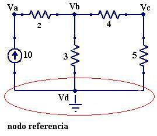
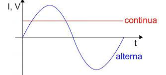
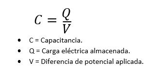

Telecomunicaciones
Existen dos principales base de datos, relacional (SQL), No relacional (No SQL).
STP: Es un protocolo que permite dotar a nuestra red de un entorno de tolerancia ante fallos mediante la creación de enlaces redundantes.
HTTP: Es un protocolo de transferencia sobre el que se basala red informática mundial.
FTP: Es un protocolo de red para la transferencia de archivos entre sistemas conectados a una red TCP.
TCP/IP: La familia de protocolos de internet, es un conjunto constituido por los protocolos de red
clave que compone la arquitectura de internet y que permite la comunicación efectiva y la transmisión de
datos entre computadoras.
SMTP: Es un protocolo de red utilizado en el envío y recepción de correos electrónicos.
AZURE: Es una plataforma de computación en la nube creado por Microsoft para construir, probar,
desplegar y administrar aplicaciones y servicios mediante el uso de sus centros de datos.
AWS Es la nube más completa y ampliamente adoptada del mundo, e incluye ofertas de infraestructuras
como servicio(laaS) y plataforma como servicio (PaaS).
Análisis de Nodos
El método del voltaje en los nodos es un método organizado
para analizar un circuito, que está basado en la ley de Kirchhoff de la corriente.
El método del voltaje en los nodos divide el análisis del circuito en esta secuencia de pasos:
*Asignar un nodo de referencia (tierra).
*Asignar nombres a los voltajes en los nodos restantes.
*Resolver los nodos fáciles primero, los que tienen una fuente de voltaje conectada al nodo de referencia.
*Escribir la ley de Kirchhoff de la corriente para cada nodo.
*Resolver el sistema de ecuaciones resultante para todos los voltajes en los nodos.
*Resolver para cualquier corriente que quieras conocer mediante el uso de la ley de Ohm.
Ejemplo nodos.
Corriente alterna
Potencia Electrica:Existen dos tipos de potencia, la potencia dispada
y la potencia suministrada, se mide en whats, la formula es P=V*I
Fuentes independientes: Son aquellas en las que la señal suministrada no depende de ninguna otra señal del circuito.
Fuentes dependientes: Fuentes de voltaje controladas por V, I. Fuentes de corriente controladas por V,I.
Exiten 4 tipos de impedancia: Impedancia Capacitativa, Impedancia Inductiva,
Impedancia Resistiva, Impedancia Equivalente.
Los elementos pasivos y activos depende de la corriente que aporte a un circuito.
Activos: Aquellos elementos que aporten a un circuito.
Pasivos: Aquellos elementos que disminuyen a un circuito.
Frecuencia: Número de repeticiones de onda durante un tiempo.
Periodo: Es diferente dependiendo la frecuencia.
Formula: f=1/T
Resistividad: Describe el comportamiento de un material frente al paso de una corriente electrica.
Formula: R=rho(L/S)
Corriente continua y corriente alterna.
Circuitos RLC
El circuito RLC es un circuito con comportamiento lineal que por lo menos contiene un resistor, un inductor y un capacitor conectados en serie o paralelo.
Los componentes forman un circuito cerrado donde se regula la corriente eléctrica.
Esto es posible gracias a la interacción entre los tres elementos: Resistencia, Bobina, Capacitor.
Resistencia: Resistente al paso de la corriente. Bobina: Componente inductor que variará su inducción electromagnética cuando es sometido a un campo magnético. Capacitor: Componente que almacena energía temporalmente.
Capacitancia: Es la capacidad de un componente o cirtuito para recoger y almacenar
energía en forma de carga eléctrica. Los capacitadores son dispositivos que almacenan
energía, disponibles en muchos tamaños y formas.

Inductancia: Es la propiedad de un circuito eléctrico para resistir el cambio de corriente.
Una corriente que fluye a tráves de un cable tiene un campo magnético alrededor. El flujo magnético
depende de la corriente y cuando la corriente varía, el flujo magnético también varía con ella.